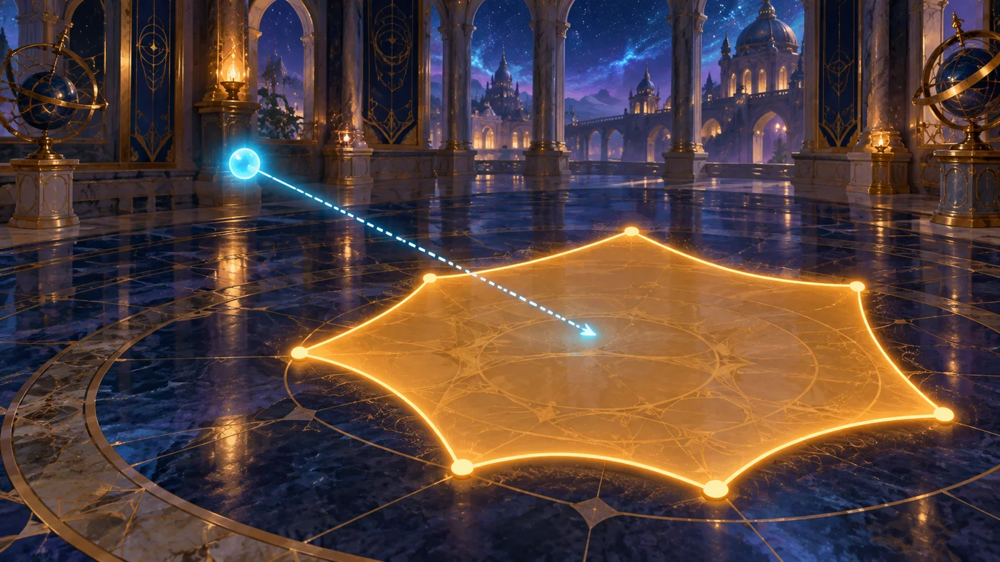
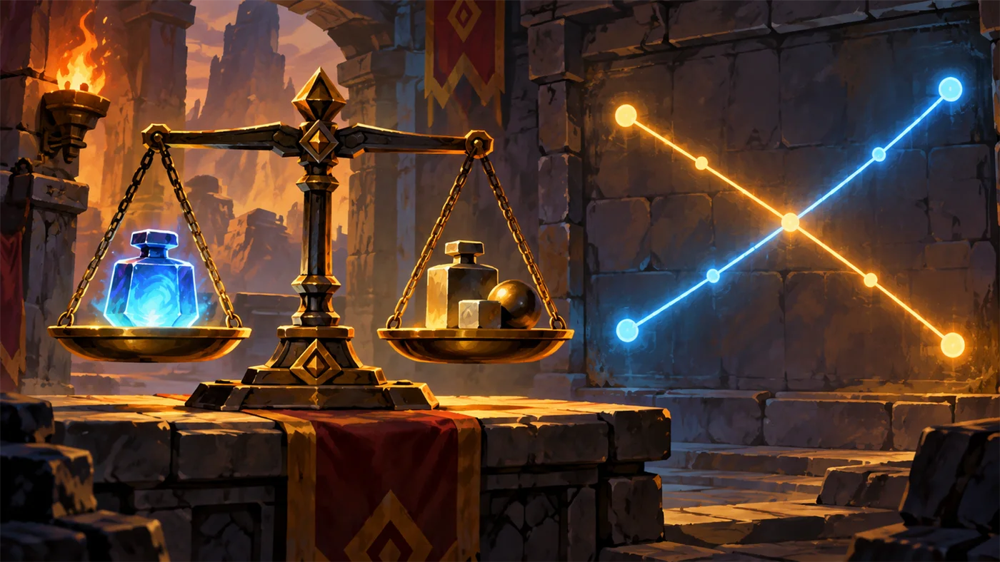
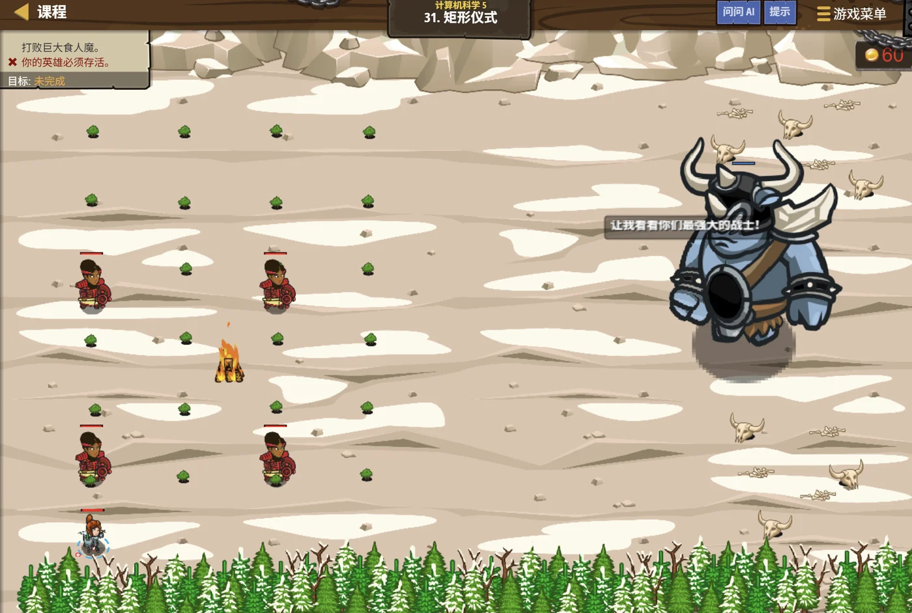

故事：机关室中央有一块方形地砖，上面写着：给出两条边，算出面积。
你随手一乘，地砖毫无反应。
贺舒曼说：看清楚了——它要的是一个函数，不是一个数。
你得把"怎么算"封装起来。
扣哒考级 · GESP PYTHON 八级 · 第 5 单元 | 寂灭王座 THE THRONE
机关几何室 基础计算几何
Basic Computational Geometry

贺舒曼
镜中先知 · 你的向导
王座侧室是一座机关室，四壁刻着各种图形：圆、矩形、三角、还有散落的点。
每个图形旁边都有一行小字：说出我的周长，门就开一道。 算出我的面积，齿轮就转一圈。
贺舒曼递给你一把尺子：别慌。这些量，全都有公式。你要做的只是别记混。
每个图形旁边都有一行小字：说出我的周长，门就开一道。 算出我的面积，齿轮就转一圈。
贺舒曼递给你一把尺子：别慌。这些量，全都有公式。你要做的只是别记混。
贺舒曼 · 镜中先知
计算几何听起来难，其实八级只考最基础的那几样：距离、周长、面积、点在不在区域内。难点不在公式，而在两件事：公式别记混、小数别算错。
这一单元我们把它们一个个过清楚。
assets/illustrations/py-L8-05-01_geometry_chamber.webp
【配图位】暗金侧室四壁刻着圆、矩形、三角形的凹槽，每道凹槽边缘浮出发光的尺寸标注与公式符号；地面中央是一块可旋转的方形地砖，砖面映出一名学徒与手中卷尺的影子。
0 单元导语与目标
Unit Overview
0.1 学习目标
0.2 考纲对照
1学完这个单元，你将能……
- 熟练计算两点之间的距离
- 计算矩形、三角形、圆的周长与面积
- 判断一个点是否落在矩形或圆内
- 处理浮点数的比较与四舍五入
- 把几何公式翻译成程序
- 避开"精度"带来的坑
- 会解一元一次方程与二元一次方程组
2对标 GESP 考纲（Python 八级）
- 掌握常用几何量的计算公式与程序实现
- 掌握两点距离、矩形周长面积、圆周长面积的计算
- 掌握一元一次方程、二元一次方程的基本求解技巧
- 了解浮点数运算的精度问题与比较方法
- 考核目标：能编写基础几何计算程序并正确处理小数
1 几何室要算什么
What to Compute
1.1 几何室要算的三件事
| 要算的量 | 公式 | 写进程序 |
|---|---|---|
| 两点距离 | √(dx² + dy²) | math.sqrt(dx*dx + dy*dy) |
| 矩形周长 | 2 × (宽 + 高) | 2 * (w + h) |
| 矩形面积 | 宽 × 高 | w * h |
| 三角形面积 | 底 × 高 ÷ 2 | base * height / 2 |
| 圆周长 | 2 × π × r | 2 * math.pi * r |
| 圆面积 | π × r² | math.pi * r * r |
1.2 三条最容易被记混的
三条最容易被记混的：
周长 vs 面积——周长是"围一圈的长度"，面积是"里面铺满的大小"。
圆的周长有 2，圆面积没有：周长 = 2πr，面积 = πr²。
三角形一定要除以 2，矩形不用。
记忆法：周长是"线"，量的是长度；面积是"面"，量的是平方。
周长 vs 面积——周长是"围一圈的长度"，面积是"里面铺满的大小"。
圆的周长有 2，圆面积没有：周长 = 2πr，面积 = πr²。
三角形一定要除以 2，矩形不用。
记忆法：周长是"线"，量的是长度；面积是"面"，量的是平方。
2 距离公式
Distance
2.1 距离计算的两种需求
七级已经学过，这里再强调两个实用点：
距离计算的两种需求
Python
import math
# ① 需要真实的距离值（要开方）
def dist(x1, y1, x2, y2):
dx = x2 - x1
dy = y2 - y1
return math.sqrt(dx * dx + dy * dy)
# ② 只需要比较远近（不用开方，更快也更精确）
def distSq(x1, y1, x2, y2):
dx = x2 - x1
dy = y2 - y1
return dx * dx + dy * dy
print(dist(0, 0, 3, 4)) # 5.0
print(distSq(0, 0, 3, 4)) # 25要点 要具体数值用
dist；只比谁近用 distSq2.2 曼哈顿距离
曼哈顿距离：另一种"距离"
在只能横竖走的格子里，"要走多少步"是
而
看题目说"走"还是"直线"，别用错。
|dx| + |dy|，
这叫曼哈顿距离（因为像在曼哈顿的方格街道上走）。而
√(dx²+dy²) 叫欧几里得距离（直线距离）。看题目说"走"还是"直线"，别用错。
3 周长与面积
Perimeter & Area
3.1 三种基本图形的公式
图 2（SVG）：三种基本图形的公式
3.2 三角形面积的两种算法
三角形面积的两种算法
Python
import math
# ① 知道底和高
def triArea1(base, height):
return base * height / 2
# ② 只知道三条边（海伦公式）
def triArea2(a, b, c):
p = (a + b + c) / 2 # 半周长
return math.sqrt(p * (p - a) * (p - b) * (p - c))
print(triArea1(6, 4)) # 12.0
print(triArea2(3, 4, 5)) # 6.0要点 海伦公式适合"只给三边"的情况；给底和高就直接乘除
assets/illustrations/py-L8-05-02_geometry_formulas.webp
【配图位】机关几何室的石桌上摊着三块石板：一块画着长方形与它的长宽标注，一块画着圆与半径标记，一块画着三角形与底和高；每块石板的一角都刻着对应的周长与面积公式。
4 判断点在哪一侧
Which Side
4.1 点是否在矩形内 / 圆内
点是否在矩形内 / 圆内
Python
import math
# ① 点在矩形内：横纵坐标都在范围内
def inRect(px, py, x1, y1, x2, y2):
return x1 <= px <= x2 and y1 <= py <= y2
# ② 点在圆内：到圆心的距离不超过半径
def inCircle(px, py, cx, cy, r):
dx = px - cx
dy = py - cy
return dx * dx + dy * dy <= r * r # 比平方，避免开方
print(inRect(3, 4, 0, 0, 5, 5)) # True
print(inCircle(3, 4, 0, 0, 5)) # True要点 判断"在内"用比较平方，既快又避免小数误差
4.2 三个包含判断的写法
三个"包含判断"的写法：
矩形内：
圆内：
线段上：先判断是否共线（用叉积），再判断是否在端点之间。
这三种判断，是计算几何里最常考的基础。
矩形内：
x1 <= px <= x2 and y1 <= py <= y2圆内：
dx*dx + dy*dy <= r*r线段上：先判断是否共线（用叉积），再判断是否在端点之间。
这三种判断，是计算几何里最常考的基础。
5 精度问题
Floating-Point Precision
5.1 浮点数不是"精确"的
浮点数不是"精确"的
Python
print(0.1 + 0.2) # 0.30000000000000004
print(0.1 + 0.2 == 0.3) # False！居然不相等
# 正确做法：判断"足够接近"而不是"完全相等"
a = 0.1 + 0.2
b = 0.3
print(abs(a - b) < 1e-9) # True结论 浮点数比较不能用
==，要用"差值小于某个很小的数"5.2 什么时候要警惕精度
什么时候要警惕精度？
① 比较两个浮点数是否相等——改用
② 判断点是否"恰好在"边界上——留一点误差余量；
③ 输出要保留几位小数——用
而"只需要比较远近"时，干脆用平方比较，从根上避开浮点数。
① 比较两个浮点数是否相等——改用
abs(a-b) < 1e-9；② 判断点是否"恰好在"边界上——留一点误差余量；
③ 输出要保留几位小数——用
round(x, n) 或格式化。而"只需要比较远近"时，干脆用平方比较，从根上避开浮点数。

assets/illustrations/py-L8-05-03_point_test_scene.webp
【配图位】地面上画着一个发光矩形与一个发光圆，几个光点分别落在里、外、以及贴边的位置：里面的点泛绿、外面的泛红、贴边的点闪着黄光并标着"要小心"；一名学徒拿着尺子逐个核对。
6 代数：一元一次方程与二元一次方程
Linear Equations
6.1 一元一次方程：移项就是"两边同时做"
assets/illustrations/py-L8-05-04_algebra_equations.webp
【配图位】寂灭王座的机关几何室中央立着一座巨大的金属天平：左盘放着"3x + 5"、右盘放着"20"；旁边两条刻痕分别写着"两边同时减 5"和"两边同时除以 3"；天平的指针在最后停在正中，左盘剩下一个发光的"x"，刻度显示答案 5
八级考纲把这一块叫"代数与平面几何"，前面讲了几何，这一节补上代数——用方程求未知的量。
图解：一元一次方程的"天平"思路——程序里就是一步减、一步除
一元一次、二元一次方程
Python
# 一元一次方程：3x + 5 = 20
a, b, c = 3, 5, 20 # a·x + b = c
x = (c - b) / a
print(x) # 5.0
# 二元一次方程：用代入法
# 2x + y = 10
# x - y = 2
# 由第二式得 y = x - 2，代入第一式：2x + (x - 2) = 10 → 3x = 12
x = 12 / 3
y = x - 2
print(x, y) # 4.0 2.0
# 直接用消元公式（行列式）
def solve(a1, b1, c1, a2, b2, c2):
d = a1 * b2 - a2 * b1 # 系数行列式
if d == 0:
return None # 无解或无数解
return (c1 * b2 - c2 * b1) / d, (a1 * c2 - a2 * c1) / d
print(solve(2, 1, 10, 1, -1, 2)) # (4.0, 2.0)要点 移项就是"两边同时做同一件事"
最容易错的两点：
① 除数为 0 要单独判断——二元一次方程组的系数行列式
② 整数除法会把答案抹掉小数——Python 写
打个比方：解方程就像"把未知数一个人留在等号左边"，移项、合并、约分，每一步都要两边同样对待。
① 除数为 0 要单独判断——二元一次方程组的系数行列式
d = a₁b₂ − a₂b₁ 等于 0 时，方程组无解或有无穷多解，不能直接除。② 整数除法会把答案抹掉小数——Python 写
/ 得小数，写 // 才是整除；解方程默认用小数。打个比方：解方程就像"把未知数一个人留在等号左边"，移项、合并、约分，每一步都要两边同样对待。
真题里怎么考（2026 年 6 月 / 9 月 · C++ 八级）：
八级的几何题几乎都是"先列式、再算数"：给出三角形三个顶点坐标求面积，先用坐标算边长、再代入公式；给出一条边和一个角，往往要先解方程求出另一条边。
所以方程不是单独一道题，而是后面所有几何题的"第一步"。
八级的几何题几乎都是"先列式、再算数"：给出三角形三个顶点坐标求面积，先用坐标算边长、再代入公式；给出一条边和一个角，往往要先解方程求出另一条边。
所以方程不是单独一道题，而是后面所有几何题的"第一步"。
6.2 二元一次方程组：代入或消元
两种解法，程序里都能写：
代入法——从一个式子里解出一个未知数，代进另一个式子；
消元法——把两式相加或相减，消掉一个未知数。
写程序时更省事的是"公式法"：直接算出系数行列式
代入法——从一个式子里解出一个未知数，代进另一个式子；
消元法——把两式相加或相减，消掉一个未知数。
写程序时更省事的是"公式法"：直接算出系数行列式
d = a₁b₂ − a₂b₁，再按公式求 x、y（见上面的代码）。
7 代码实战
Level Practice
关卡
矩形仪式
进入关卡 →思路：定义一个函数，接收两条边、返回面积。主程序只要调用它。


assets/stages/py-L8-05-stage1_rect_ritual.webp
【关卡截图位】请把《矩形仪式》的游戏画面截图放到此处（放入 assets/stages/ 目录，文件名为 py-L8-05-stage1_rect_ritual.webp）。
重点示例：把公式封装成函数
Python
def area(sideA, sideB):
# 返回两条边围成的矩形面积
return sideA * sideB
def perimeter(sideA, sideB):
# 返回矩形周长
return 2 * (sideA + sideB)
print(area(5, 3)) # 15
print(perimeter(5, 3)) # 16要点 函数名说明"算的是什么"；公式写在里面，调用处只关心结果
为什么要封装？
因为几何题里同一个公式往往要用好几次。
写成函数之后，改公式只需改一处；调用处也不必关心细节。
而且函数名本身就像"注释"，让代码一眼看懂。
去扣哒世界闯这一关 →
写成函数之后，改公式只需改一处；调用处也不必关心细节。
而且函数名本身就像"注释"，让代码一眼看懂。
关卡
雪人面积
进入关卡 →
故事：雪人用雪球垒了三个圆，要求你算出总面积，
算对了它才肯让路。
圆的面积是 π 乘半径的平方。贺舒曼提醒， 注意是半径的平方，不是直径，也不是乘 2。
圆的面积是 π 乘半径的平方。贺舒曼提醒， 注意是半径的平方，不是直径，也不是乘 2。
重点示例：圆的面积
Python
import math
radius = 5
area = math.pi * radius * radius # π r²
print(round(area, 2)) # 78.54
# 也可以用平方写法
area2 = math.pi * (radius ** 2)要点
math.pi * r * r 或 math.pi * r ** 2 都行；别写成 2 * math.pi * r（那是周长）
最经典的一个错：
把
·
·
· 正确的是
建议写成
去扣哒世界闯这一关 →
πr² 写成 (πr)² 或 2πr。·
2πr 是周长；·
(πr)² 就更离谱了，等于 π²r²；· 正确的是
π × (r²)——先算平方，再乘 π。建议写成
math.pi * r * r，一眼就能看出是"平方"。
8 常见陷阱
Common Pitfalls

扣哒鸭 · 调试官
几何的错，一半是公式记混，一半是精度没处理。四条，条条都能让答案差得离谱。
1
把周长公式当面积用。圆面积写成
2 * math.pi * r。
扣哒鸭：
记法：面积量的是"面"，所以要乘两次半径。
2 * pi * r 是周长；面积是 pi * r * r。记法：面积量的是"面"，所以要乘两次半径。
正确写法：
math.pi * r * r2
用
/ 做几何计算，结果带长小数。
扣哒鸭：几何量本来就可能不是整数，
但如果题目要求"输出整数"，就得用
/ 是正确的选择。但如果题目要求"输出整数"，就得用
// 或者 round()/int() 转换——看清要求再写。正确做法：按题目要求决定用
/ 还是取整3
两个浮点数直接用
== 比较。
扣哒鸭：
浮点数比较要写
0.1 + 0.2 == 0.3 居然是 False！浮点数比较要写
abs(a - b) < 1e-9。正确写法：
abs(a - b) < 1e-94
判断"点在圆内"时先开方再比较。

扣哒鸭：开方之后是小数，比较容易出错。
直接比平方：
直接比平方：
dx*dx + dy*dy <= r*r，又准又快。正确做法：比较平方，避免开方
9 题目练习
Practice
前 2 题改编自 2026 年 9 月 · Python 八级 第 7、8 题，其余为原创练习题。
改编自 2026 年 9 月 · Python 八级 · 第 7 题单选题
机关几何室里有一个长方形机关，它的长是宽的 3 倍，周长为 48。
这个长方形的面积是（ ）。
这个长方形的面积是（ ）。
A.72 B.96 C.108 D.144
查看答案与详解
答案：C。这是一道"先列方程、再算几何量"的题：
设宽为
所以宽 6、长 18，面积 = 6 × 18 = 108。
八级的常见套路：几何量（长宽、边长）常常不是直接给的，而是要用一元一次方程解出来 ——这正是本单元"代数与计算几何"连在一起考的原因。
检查：6 + 18 = 24，24 × 2 = 48 ✓ 周长对上了再往下算面积。
对应小节6.1 一元一次方程。
设宽为
x，则长为 3x，由周长公式 2 × (长 + 宽) = 48 得：2 × (3x + x) = 48 → 8x = 48 → x = 6。所以宽 6、长 18，面积 = 6 × 18 = 108。
八级的常见套路：几何量（长宽、边长）常常不是直接给的，而是要用一元一次方程解出来 ——这正是本单元"代数与计算几何"连在一起考的原因。
检查：6 + 18 = 24，24 × 2 = 48 ✓ 周长对上了再往下算面积。
对应小节6.1 一元一次方程。
改编自 2026 年 9 月 · Python 八级 · 第 8 题单选题
若
x + y = 7，x − y = 1，则 x × y 的值为（ ）。A.7 B.8 C.10 D.12
查看答案与详解
答案：D。这是最简单的二元一次方程组，用"消元法"两步就出来：
① 两式相加消掉 y：
② 把 x = 4 代回第一式：
所以
为什么"相加"能消元？因为两个式子里 y 的系数正好是 +1 和 −1，相加后互相抵消 —— 这就是系数互为相反数时用加法消元；如果系数相同，就改用减法。
写完必验：4 + 3 = 7 ✓、4 − 3 = 1 ✓，两个式子都成立才算对。
对应小节6.2 二元一次方程组。
① 两式相加消掉 y：
(x + y) + (x − y) = 7 + 1 → 2x = 8 → x = 4；② 把 x = 4 代回第一式：
4 + y = 7 → y = 3。所以
x × y = 4 × 3 = 12。为什么"相加"能消元？因为两个式子里 y 的系数正好是 +1 和 −1，相加后互相抵消 —— 这就是系数互为相反数时用加法消元；如果系数相同，就改用减法。
写完必验：4 + 3 = 7 ✓、4 − 3 = 1 ✓，两个式子都成立才算对。
对应小节6.2 二元一次方程组。
原创练习题单选题
半径为 3 的圆，面积是（ ）。（π 取 3.14）
A.18.84 B.28.26 C.9.42 D.6.28
查看答案与详解
答案：B。圆面积 = πr² = 3.14 × 3 × 3 = 28.26。
易错点：A 项 18.84 = 2 × 3.14 × 3，那是周长；D 项 6.28 = 2 × 3.14，算错了次数。
对应小节3 周长与面积。
易错点：A 项 18.84 = 2 × 3.14 × 3，那是周长；D 项 6.28 = 2 × 3.14，算错了次数。
对应小节3 周长与面积。
原创练习题单选题
长方形的长是 8、宽是 5，它的周长和面积分别是（ ）。
A.13 和 40 B.26 和 40 C.40 和 26 D.26 和 13
查看答案与详解
答案：B。周长 = 2 × (8 + 5) = 26；面积 = 8 × 5 = 40。
易错点：A 项 13 是"长+宽"，忘了乘 2；C 项把两者写反了。
对应小节3 周长与面积。
易错点：A 项 13 是"长+宽"，忘了乘 2；C 项把两者写反了。
对应小节3 周长与面积。
原创练习题判断题
在 Python 中，
0.1 + 0.2 == 0.3 的结果是 True。（ ）查看答案与详解
答案：错误（×）。由于浮点数的存储方式，
正确写法：
对应小节5 精度问题。
0.1 + 0.2 得到的是 0.30000000000000004，并不等于 0.3。正确写法：
abs(0.1 + 0.2 - 0.3) < 1e-9。对应小节5 精度问题。
原创练习题单选题
三角形三边为 6、8、10，它的面积是（ ）。
A.24 B.48 C.30 D.12
查看答案与详解
答案：A。用海伦公式：半周长 p = (6+8+10)/2 = 12，
面积 = √(12 × 6 × 4 × 2) = √576 = 24。
更快的方法：6、8、10 是直角三角形（6² + 8² = 10²），所以面积 = 6 × 8 ÷ 2 = 24。
对应小节3 周长与面积。
面积 = √(12 × 6 × 4 × 2) = √576 = 24。
更快的方法：6、8、10 是直角三角形（6² + 8² = 10²），所以面积 = 6 × 8 ÷ 2 = 24。
对应小节3 周长与面积。
原创练习题判断题
判断点 (3, 4) 是否在以原点为圆心、半径 5 的圆内，可以比较
3*3 + 4*4 与 5*5 的大小，而不必开方。（ ）查看答案与详解
答案：正确（√）。因为开方是单调运算，
距离 ≤ 半径 等价于 距离² ≤ 半径²。
本题：3² + 4² = 25 = 5²，所以点正好落在圆上（属于"圆内"的边界情况）。
用平方比较，既快又避免小数误差。
对应小节4 判断点在哪一侧。
本题：3² + 4² = 25 = 5²，所以点正好落在圆上（属于"圆内"的边界情况）。
用平方比较，既快又避免小数误差。
对应小节4 判断点在哪一侧。
原创练习题单选题
半径为 2 的圆，它的周长与面积分别是（ ）。（π 取 3.14，保留 1 位小数）
A.12.6 和 12.6 B.12.6 和 6.3 C.6.3 和 12.6 D.25.1 和 12.6
查看答案与详解
答案：A。周长 = 2πr = 2 × 3.14 × 2 = 12.56 ≈ 12.6；
面积 = πr² = 3.14 × 2 × 2 = 12.56 ≈ 12.6。
有趣之处：当 r = 2 时，周长 2πr = 4π，面积 πr² = 4π——两者数值恰好相等。
但这只是巧合！r = 3 时周长 ≈ 18.8、面积 ≈ 28.3，完全不同了。
所以千万别用这个特例去记公式。
对应小节3 周长与面积。
面积 = πr² = 3.14 × 2 × 2 = 12.56 ≈ 12.6。
有趣之处：当 r = 2 时，周长 2πr = 4π，面积 πr² = 4π——两者数值恰好相等。
但这只是巧合！r = 3 时周长 ≈ 18.8、面积 ≈ 28.3，完全不同了。
所以千万别用这个特例去记公式。
对应小节3 周长与面积。
原创练习题编程题
题目要求：定义函数计算圆、矩形、三角形的周长与面积，
并输出半径为 5 的圆、边长 4×6 的矩形、底 8 高 3 的三角形的各项结果（保留 2 位小数）。
查看参考答案与要点
import math
def circle(r):
return round(2 * math.pi * r, 2), round(math.pi * r * r, 2)
def rect(w, h):
return round(2 * (w + h), 2), round(w * h, 2)
def triangle(base, height):
# 只有面积需要底和高；周长需要三边，这里只返回面积
return round(base * height / 2, 2)
cPerimeter, cArea = circle(5)
print("圆：周长", cPerimeter, "面积", cArea)
rPerimeter, rArea = rect(4, 6)
print("矩形：周长", rPerimeter, "面积", rArea)
print("三角形面积：", triangle(8, 3))
输出：圆 周长 31.42 面积 78.54；矩形 周长 20 面积 24；三角形面积 12.0
要点：
① 圆周长 = 2πr，圆面积 = πr²——两者都要用到 π，别混；
② 矩形的两个公式都用到"长和宽"，但一个乘 2、一个是乘积；
③ 三角形面积别忘了 / 2；
④ 用 round(x, 2) 控制输出精度，避免出现一长串小数。
对应小节3 周长与面积；6 代码实战。
10 本单元小结
Unit Summary
贺舒曼 · 镜中先知
三句话记住计算几何：一、距离 √(dx²+dy²)；矩形 2(w+h) 与 w×h；圆 2πr 与 πr²；三角形要除以 2。
二、判断"在内"用比较平方，别开方。
三、浮点数不能用 == 比较，要写成 abs(a-b) < 1e-9。
还有个好习惯：把公式封成函数，名字写清楚——以后就不会记混了。
你在机关几何室收获了什么
- 两点距离——
math.sqrt(dx*dx + dy*dy)；只比远近时用距离平方。 - 曼哈顿距离——
|dx| + |dy|，适用于只能横竖走的情况。 - 矩形——周长
2(w+h)，面积w×h。 - 三角形——面积 = 底 × 高 ÷ 2；只知道三边就用海伦公式。
- 圆——周长
2πr，面积πr²；别把两者写反。 - 包含判断——矩形用区间比较，圆用"距离平方 ≤ 半径平方"。
- 精度处理——浮点数比较用
abs(a-b) < 1e-9；输出用round()。 - 封装公式——把每个公式写成函数，名字表明含义。